1.CSS盒模型
★简介：就是用来装页面上的元素的矩形区域.CSS中的盒子模型包括IE盒子模型和标准的W3C盒子模型。
①标准盒模型

★这是标准盒子模型，可以看到width的长度等于content的宽度；而当将box-sizing的属性值设置成border-box时，盒子模型的width=border+padding+content的总和
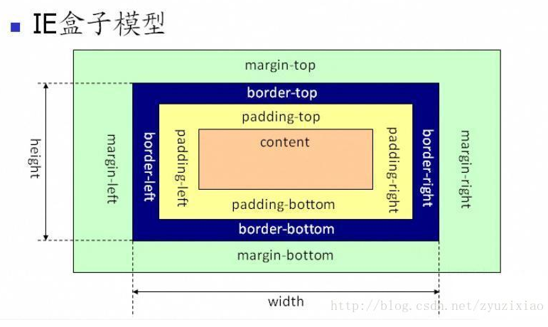
②IE盒模型，IE盒模型的width=content+padding+border
★注：IE浏览器中在怪异模式下盒模型以IE盒模型呈现，在标准模式下以标准的盒模型呈现
★区别
①从图中我们可以看出，这两种盒子模型最主要的区别就是宽度的包含范围，在标准的盒子模型中，宽度指内容部分的宽度，在IE盒子模型中，宽度表示内容+填充+边境这三个部分的宽度，故这使得在计算整个盒子的宽度时存在着差异：
②切换盒模型：IE：box-sizing：border-box；CSS定义的宽高包括了content，padding和border
③W3C：box-sizing：content-box；CSS定义的宽高只包含content的宽高
2.CSS3新特性
- 选择器
- RGBA和透明度
- 边框(border-image、border-radius、box-shadow)
- 盒阴影：box-shadow: 10px 10px 5px #888888
- 背景(background-clip、background-origin、background-size)
- 渐变(linear-gradients、radial-gradents)
- 字体(@font-face)
- 转换、形变(transform)
- 过度(transition)
- 动画(animation)
- 弹性盒模型(flex-box)
- 媒体查询(@media)
3.选择器以及优先级
①CSS选择符：id选择器(#myid)、类选择器(.myclassname)、
②标签选择器(div, h1, p)、相邻选择器(h1 + p)、
③子选择器（ul > li）、后代选择器（li a）、通配符选择器（*）、
④属性选择器（a[rel=”external”]）、
⑤伪类选择器（a:hover, li:nth-child）
权重
①元素选择符：1
②class选择符：10
③id选择符：100
④元素标签：1000
⑤!important声明的样式优先级最高，如果冲突再进行计算。 如果优先级相同，则选择最后出现的样式。 继承得到的样式的优先级最低。
4.伪类和伪元素
单冒号(:)用于 CSS3 伪类，双冒号(::)用于 CSS3 伪元素。目的是用于区分
伪类包含两种：状态伪类和结构性伪类。
5.伪类顺序
1.link visited focus hover active
2.visited、link、focus、hover、active
静态伪类:link和visited
动态伪类:focus、hover、active
6.基本布局
①.流式布局
需了解实现块居中常见的几种方式
②.浮动布局
当设置float:left或者float:right时, 元素会左移或右移直到触碰到容器位置，仍然处于标准文档流中。当元素没有设置宽度值，而设置了浮动属性，元素的宽度随内容的变化而变化。当元素设置为浮动属性后，会对紧邻之后的元素造成影响，紧邻之后的元素会紧挨着该元素显示。当父元素包含块缩成一条时，用clear:both方法无效，它一般用于紧邻后面的元素的清除浮动，要用overflow属性。清除浮动的方法有两种:使用clear属性 - clear: both; 同时设置width:100%(或固定宽度) + overflow:hidden。
浮动布局可实现横向多列布局
③.绝对定位布局
position：static, relative, absolute, fixed
实现横向两列布局
常用于一列固定宽度，另一列宽度自适应的情况 relative - 父元素相对定位 absolute - 自适应宽度元素定位
能够实现横向多栏布局
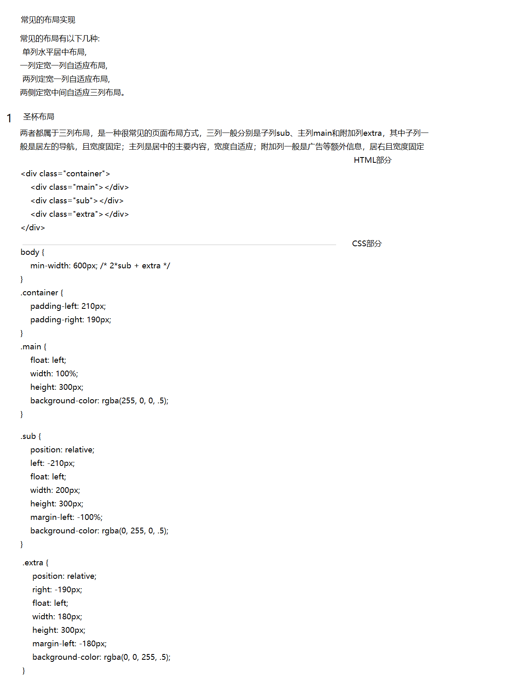 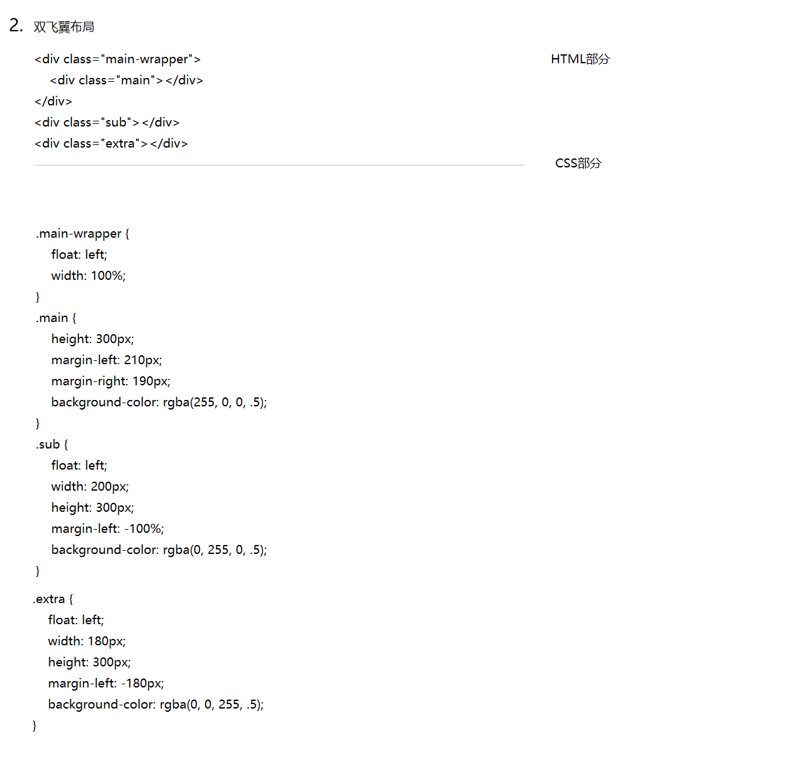★总结:
俩种布局方式都是把主列放在文档流最前面，使主列优先加载。两种布局方式在实现上也有相同之处，都是让三列浮动，然后通过负外边距形成三列布局。
两种布局方式的不同之处在于如何处理中间主列的位置：圣杯布局是利用父容器的左、右内边距定位；双飞翼布局是把主列嵌套在div后利用主列的左、右外边距定位。
TODO: margin为负值时的使用 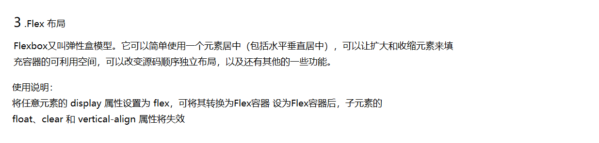
- 父元素（容器）的属性:
- flex-direction:属性决定主轴的方向（即项目的排列方向）。
- flex-wrap属性定义，如果一条轴线排不下，如何换行
- flex-flow属性是flex-direction属性和flex-wrap属性的简写形式，默认值为row nowrap。
- justify-content属性定义了项目在主轴上的对齐方式。
- align-items属性定义项目在交叉轴上如何对齐。
- align-content属性属性定义了多根轴线的对齐方式。如果项目只有一根轴线，该属性不起作用。
- 项目(子元素)上的属性:
- order属性定义项目的排列顺序。数值越小，排列越靠前，默认为0。
- flex-grow属性定义项目的放大比例，默认为0，即如果存在剩余空间，也不放大。
- flex-shrink属性定义了项目的缩小比例，默认为1，即如果空间不足，该项目将缩小。
- flex-basis属性定义了在分配多余空间之前，项目占据的主轴空间（main size）。浏览器根据这个属性，计算主轴是否有多余空间。它的默认值为auto，即项目的本来大小。
- flex属性是flex-grow, flex-shrink 和 flex-basis的简写，默认值为0 1 auto。后两个属性可选
- align-self属性允许单个项目有与其他项目不一样的对齐方式，可覆盖align-items属性。默认值为auto，表示继承父元素的align-items属性，如果没有父元素，则等同于stretch。
- 响应式布局(Responsive Web Design)
- 响应式布局是指，网页可以自动识别设备屏幕宽度，根据不同的宽度采用不同的CSS的样式，从而达到兼容各种设备的效果。 响应式布局使用媒体查询(CSS3 Media Queries), 根据不同屏幕分辨率采用不同CSS规则, 使用方式如下:
- @media screen and (max-width:1024px) { /* 视窗宽度小于1024px时 */ .... }
7.元素居中
- 水平居中：
- （1）父元素设置text-align:center,子元素设置为行内元素
- （2）margin: 0 auto;
- （3）条件：父子元素宽高皆定px。相对于父元素绝对定位，margin-left为负的一半宽。原理：以左边为移动基准，左边移动50%（左边居中）后再使元素往左挪自己的一半即为元素居中left: 50%;margin-left: -100px;
- （4）justify-content: center;
- 垂直居中：
- （1）父元素display: table-cell;vertical-align: middle;
- （2）父子元素宽高皆定px。相对于父元素绝对定位，top: 50%;margin-top: -50px;
- （3）align-items: center;
- 水平垂直居中：
- （2）子元素相对于父元素绝对定位，四周为0，并且margin值位auto：left: 0; right: 0;bottom: 0;top:0;margin: auto，不受宽高限制;
- （3）diplay：table-cell：父元素display: table-cell;vertical-align: middle;子元素margin: 0 auto;
- （4）diplay：table-cell：父元素display: table-cell;vertical-align: middle;text-align:center子元素display:inline-block;
- （5）绝对定位和transform：left:50%;top:50%;transform:translate(-50%,-50%);百分数时，是相当于移动的元素的宽+padding，高+padding的百分比。
- （6）display: flex;justify-content: center;align-items: center;
8.清除浮动
②、父级标签触发BFC(下面有专门介绍)
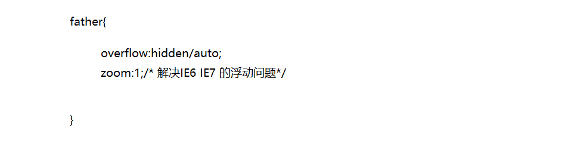9.Css内链与外链以及内嵌的区别？以及权重
引入css的方式
①行内式 ②内嵌式 ③外链式，使用link标签 ④使用@import引入css使用方法不同：
★权重：
内联样式的权值为：1000
ID选择器的权值为：100
类或伪类的权值为：10
元素和伪元素的权值为：1
10.块级元素、行内元素、行内块元素
块状元素特征：
div、p、h1~h6、ul、ol、dl、li、dd、table、hr、 blockquote、address、table、menu、pre， HTML5新增的header、section、aside、footer等(1)能够识别宽高
(2) margin和padding的上下左右均对其有效
(3) 可以自动换行
(4) 多个块状元素标签写在一起，默认排列方式为从上至下
行内元素特征：
span、img、a、lable、input、abbr（缩写）、 em（强调）、big、cite（引用）、i（斜体）、q（短引用）、 textarea、select、small、sub、sup，strong、u（下划线）、 button（默认display：inline-block））(1)设置宽高无效。
(2)对margin仅设置左右方向有效，上下无效；padding设置上下左右都有效，即会撑大空间
(3)不会自动进行换行
行内块状元素特征：
(1)不自动换行 (2) 能够识别宽高 (3)默认排列方式为从左到右11.link标签和import的区别
②页面被加载时，link会同时被加载，而@import引用的css会等到页面加载结束后加载。
③link是html标签，因此没有兼容性，而@import只有IE5以上才能识别。
④link方式样式的权重高于@import的。
12.display:none 和 visibility: hidden的区别
★visibility:hidden 隐藏对应的元素，但是在文档布局中仍保留原来的空间。
13.style标签写在body后与body前有什么区别
14.创建一个三角形
15.解决li之间的间隔问题
★由于换行产生的空白格，其实是浏览器解析li那块代码的时候将结尾的回车当成了一个空白字符
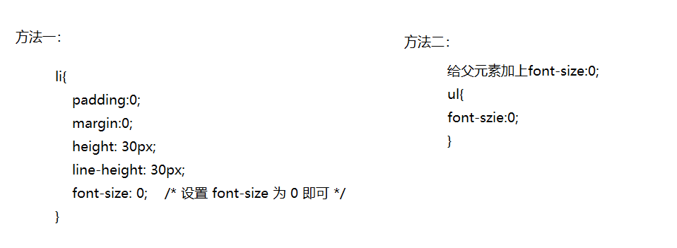16.reset.css和normalize.css区别以及优缺点
★为什么会有CSS Reset的存在呢？那是因为早期的浏览器支持和理解的CSS规范不同，导致渲染页面时效果不一致，会出现很多兼容性问题。
★reset.css能够重置浏览器的默认属性。不同的浏览器具有不同的样式，重置能够使其统一。
reset 的目的，是将所有的浏览器的自带样式重置掉，这样更易于保持各浏览器渲染的一致性。
★reset缺点
*{ margin:0; padding:0; }会带来性能问题
使用通配符存在隐性问题
过渡的标签重置等于画蛇添足
过渡的标签重置导致语言元素失效
Normalize.css 是一个可定制的 CSS 文件 使浏览器呈现的所有元素，更一致和符合现代标准; 是在现代浏览器环境下对于CSS reset的替代。 它正是针对只需要统一的元素样式。
★创造normalize.css的目的(优点)
保护有用的浏览器默认样式而不是完全去掉它们
一般化的样式：为大部分HTML元素提供
修复浏览器自身的bug并保证各浏览器的一致性
优化CSS可用性：用一些小技巧
解释代码：用注释和详细的文档来
重要区别
相对于CSS Reset的核心作用就是清零，也存在一系列的问题，所以和normalize.css就有很大的区别
1.Normalize.css 保护了有价值的默认值
2.Normalize.css 修复了浏览器的bug
3.Normalize.css 修复了浏览器的bug
4.Normalize.css 是模块化的
5.Normalize.css 拥有详细的文档
优秀参考：
CSS Reset/Normalize.css17.CSS预处理器
什么是CSS预处理器
CSS预处理器定义了一种新的语言，基本的思想是用一种专门的编程语言，开发者只需要使用这种语言进行编码工作，减少枯燥无味的CSS代码的编写过程的同时，它能让你的CSS具备更加简洁、适应性更强、可读性更加、层级关系更加明显、更易于代码的维护等诸多好处。
CSS预处理器种类繁多，本次就以Sass、Less、Stylus进行比较。首先Sass和Less以及Stylus都是用的是标准的CSS语法
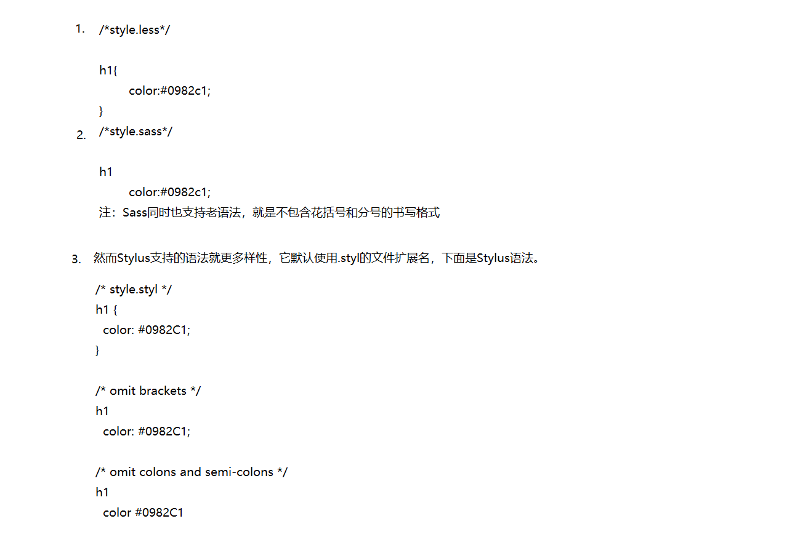
★变量
你可以在CSS预处理中声明变量，并在整个样式单中使用，支持任何类型的变量， 例如：颜色、数值（是否包含单位）、文本。然后你可以任意的调取和使用该变量。
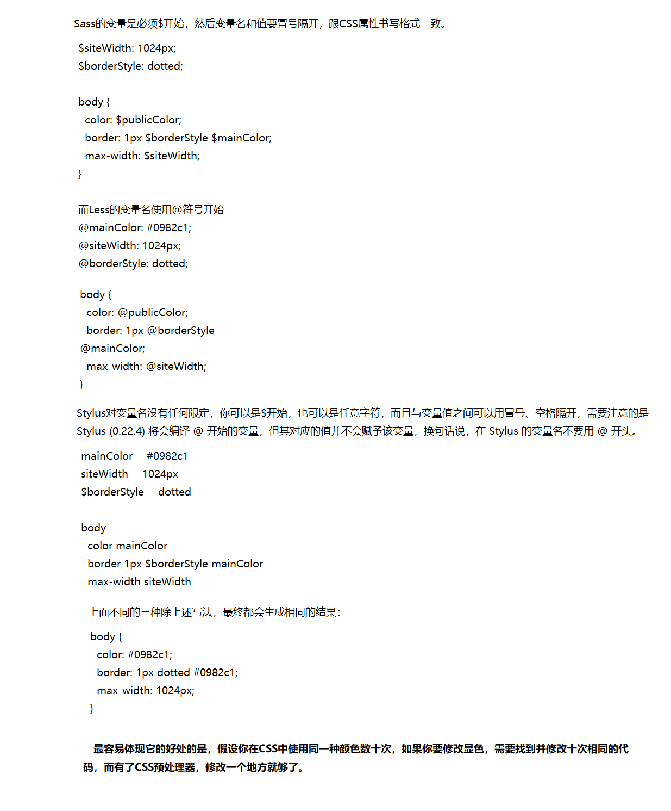
18.CSS优化、提高性能的方法有哪些
- 避免过度约束
- 避免后代选择符
- 避免链式选择符
- 使用紧凑的语法
- 避免不必要的命名空间
- 避免不必要的重复
- 最好使用表示语义的名字。一个好的类名应该是描述他是什么而不是像什么
- 避免！important，可以选择其他选择器
- 尽可能的精简规则，你可以合并不同类里的重复规则
19.表单的基本组成部分有哪些，表单的主要用途是什么？
主要有三部分组成
①表单标签：包含处理表单数据所用CGI程序的URL以及数据提交到服务器的方法
②表单域：用于采集用户的输入或选择的数据，例如，文本框、多行文本框、密码框、隐藏域、单选按粗、复选框、下拉选择框及文件上传框等
③表单按钮：用于将数据传送到服务器上的CGI脚本或者取消输入，还可以用来控制其他定义了处理脚本所进行的工作，包含提交按妞、复位按枉和一般按妞
用于数据的交互和提交，只有在表单中，才能将数据Pos
20.文本省略号
单行缩略的实现如下:
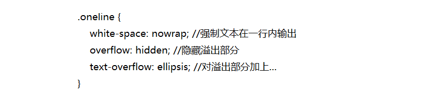多行缩略
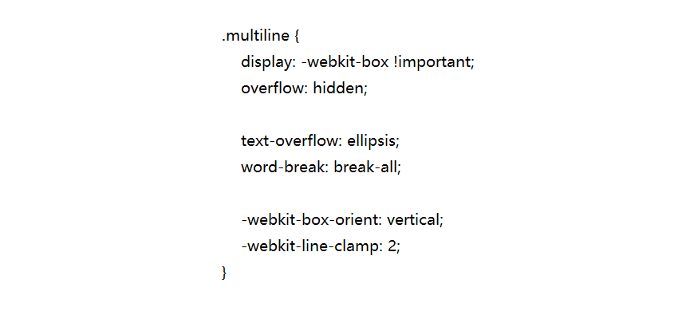21.CSS animations和CSS transitions的区别
②并且transition为2帧，从具体的某一状态过度到另一个状态，而animation可以一帧一帧的。
22.阐述一下CSS Sprites
CSS Sprites通常被称为css精灵图，在国内也被意译为css图片整合和css贴图定位，也有人称他为雪碧图 就是将导航的背景图，按钮的背景图等有规则的合并成一张背景图，
即多张图合并为一张整图，然后再利用background-position进行背景图定位的一种技术。
为什么需要css sprites
CSS Sprint 他是网页里常见的一种图片应用处理方式，他允许你将一个页面里所涉及到的所=有的零星的图片都整合到一张大图中去
节省加载速度，并且HTTP的请求次数，很多网站的导航背景图，登录框，按钮背景图
优点
跟能够提升网站性能有关。显而易见，这是它的巨大优点之一。普通制作方式下的大量图片，现在合并成一个图片，大大减少了HTTP的连接数。HTTP连接数对网站的加载性能有重要影响。
缺点
失去了灵活性
必须限制盒子的大小才能使用css Sprites,否则可能会出现出现干扰图片的情况。YUI的解决方式是，加大图片之间的距离，这样可以保持有限度的缩放。
23.懒加载和预加载
①什么是懒加载：懒加载也叫延迟加载，指的是在长网页中延迟加载图像，是一种很好优化网页性能的方式。用户滚动到它们之前，可视区域外的图像不会加载。这与图像预加载相反，在长网页上使用延迟加载将使网页加载更快。 在某些情况下，它还可以帮助减少服务器负载。常适用图片很多，页面很长的电商网站场景中。
★作用:
①提升用户体验
②减少无效资源的加载
③防止并加载的资源过多会阻塞js的加载，影响网站正常使用
使用方法:
①使用封装好的jquery.lazyload.js文件:单独下载地址jquery.lazyload.js
②lazyload.js依赖于jquery或者zepto.js
③引入lazyload.js文件尽量放到jquery文件的后面
④将图片的真实路径放在img的data-original属性上。给img标签增加一个自定义的类名如：lazyload，方便js调用。
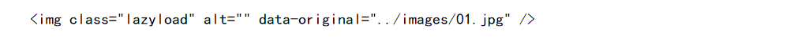⑤js调用
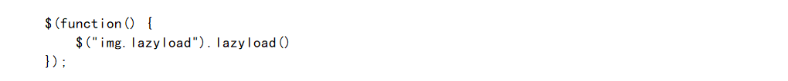★预加载:资源预加载是另一个性能优化技术，我们可以使用该技术来预先告知浏览器某些资源可能在将来会被使用到。预加载简单来说就是将所有所需的资源提前请求加载到本地，这样后面在需要用到时就直接从缓存取资源。
★作用:在网页全部加载之前，对一些主要内容进行加载，以提供给用户更好的体验，减少等待的时间。否则，如果一个页面的内容过于庞大，没有使用预加载技术的页面就会长时间的展现为一片空白，直到所有内容加载完毕。
★使用方法：PreloadJS库
①安装CreateJS
②引用CreateJS并添加到队列前，否则他们将不会被处理，即使负载实际上并没有拉开序幕呢。当项目被添加到LoadQueue插件功能的处理。
③JS调用
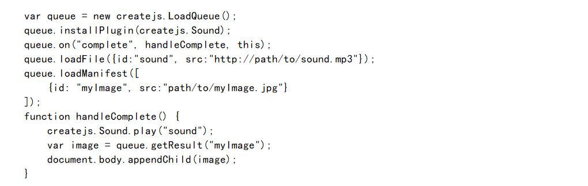 优秀参考->Data:2018 . 9/ 25